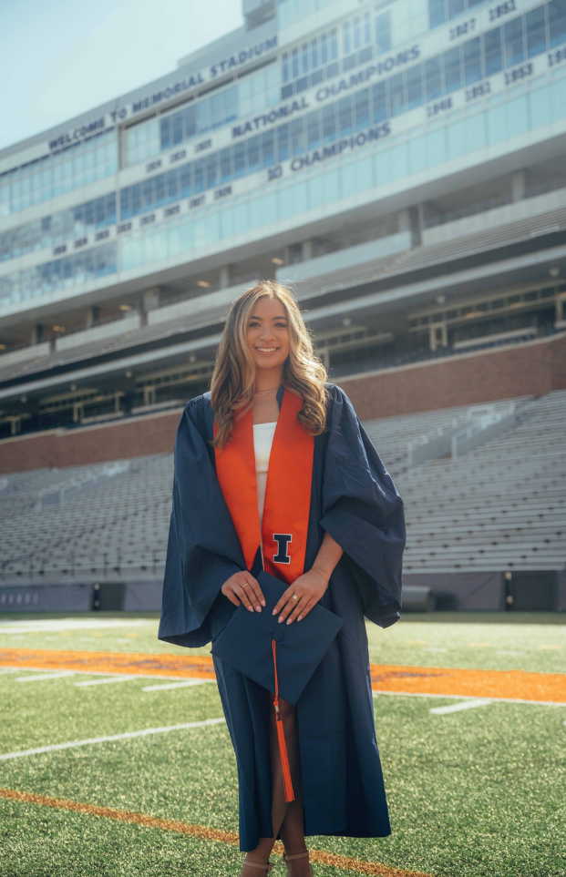

Born and raised in the Chicagoland suburbs, I was deeply influenced by my
Filipino heritage and the strong family values and traditions that came with
it. Growing up in the US, I was fortunate enough to travel the world and
experience new cultures firsthand. I’ve visited more countries and states
than I can count and have a special love for the Netherlands, Argentina,
Philippines, and Hawaii, which is a state I've visited more than 20
times!
My educational journey led me to pursue opportunities that utilize my
technical knowledge in consulting roles and client-facing positions,
particularly those involving project management. I am passionate about
technology for social good, biotechnology, women in tech and leadership,
diversity, equity, and inclusion, ethical tech/data privacy, and
technology-focused innovation and trends.
Outside of my professional interests, I cherish spending time with family
and friends, exploring downtown Chicago, listening to music, and attending
festivals and shows. I am an avid follower of Formula 1 racing and have a
keen interest in fashion.
A unique aspect of my upbringing is my background in competitive
cheerleading, where I competed at the state championship level. This
experience taught me the importance of teamwork, how to cooperate with
teammates from all walks of lifes, and how to leverage everyone’s strengths,
long before my professional journey began. It also instilled in me the
resilience to overcome hardships and the discipline to endure long,
grueling, and physically demanding practices after long school days. I am
forever grateful for this experience as I have been able to translate this
strength to the workplace to be an effective team member and leader.
Through my diverse experiences and passions, I have developed a deep
appreciation for the complexity of our world and the incredible people
within it. I approach each project with intention and ensure it aligns with
my ethics, values and passions, driven by the unwavering belief that
everything in life is attainable through hardwork.
Emily Deleon
emilygdeleon@gmail.com
© 2024 Emily Deleon
